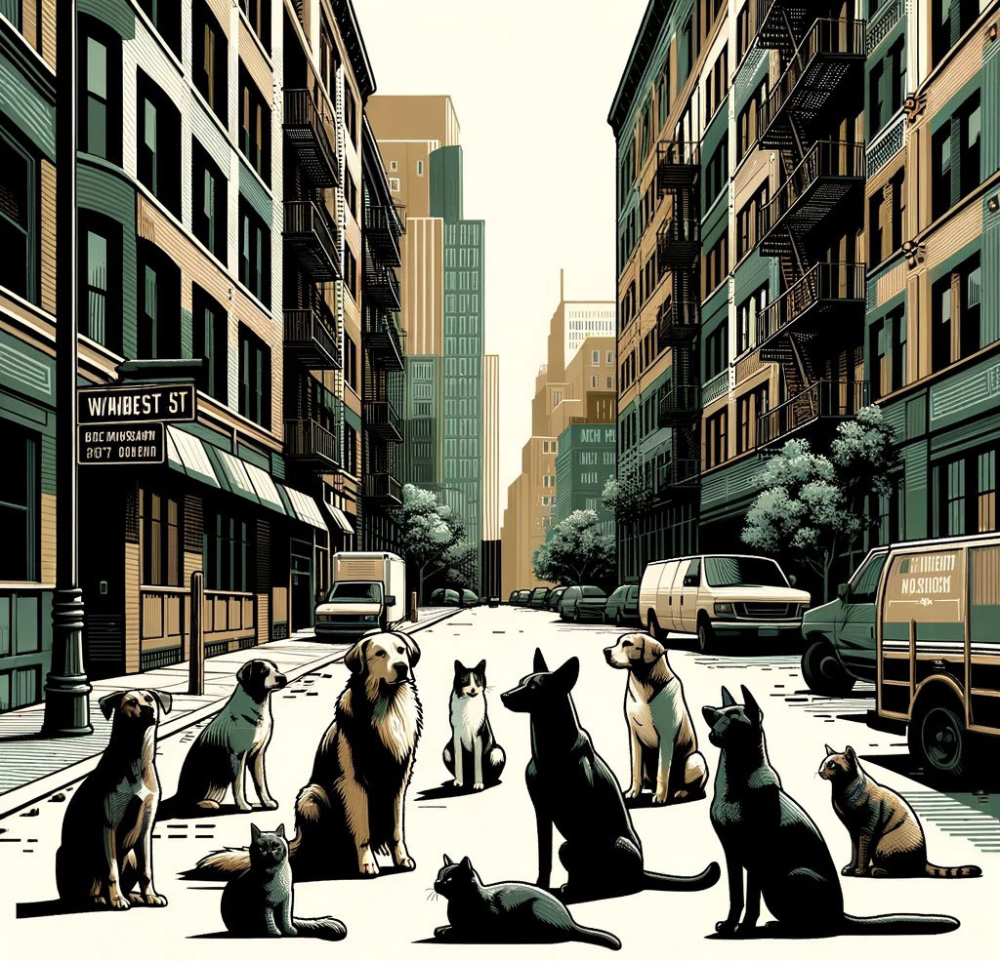

About Us
Our system is focused on helping people be aware of lost or escaped animals around them. Whether it's a neighborhood dog or a more unusual animal, every report you make can make a difference.
How to Report
Spot a stray? Don't hesitate. Use our web service to quickly report it. Upload photos, provide a simple description, and choose tags that best describe the situation. Whether it's noting that an animal has left its shelter or seems in distress, your report is valuable.
News and Updates
Keep up with the latest reports with our RSS news feed. Each new report is added, keeping you informed about what's happening around you.
Join us in creating a safer community for both people and animals. Report your sightings today!
